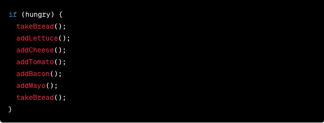
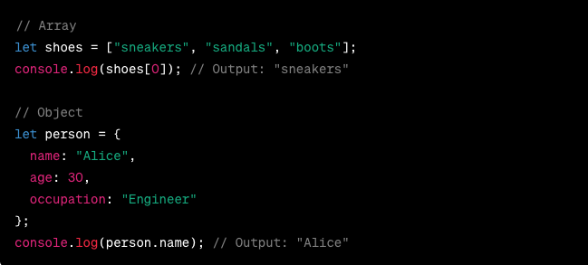
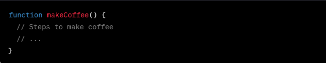

JS Fundamentals
JavaScript and its relationship to HTML and CSS
Imagine your web page is a sandwich. HTML is the bread; it provides the structure. CSS is the seasoning; it adds style and makes things look good. Now, JavaScript? It's the secret sauce! JavaScript, often just called JS, is a scripting language that brings interactivity to your web pages. It's like the conductor of an orchestra, making everything work together seamlessly. With JS, you can make your web page respond to clicks, display alerts, and do all sorts of cool things.
In this code snippet, JavaScript is used to create a pop-up alert saying "Hello, world!" It's that easy to get started!
Control Flow and Loops: Like Following a Recipe
Control flow is like following a recipe in the kitchen. Let's take the example of making a sandwich. You start with the bread, then add some lettuce, then cheese, and so on.
Here, if (hungry) is a condition. If you're hungry, you follow the steps inside the curly braces. If not, you skip them.
Now, loops are like making multiple sandwiches with slight variations:
This loop makes three sandwiches by repeating the makeSandwich() steps.
The DOM: Your Web Page's Blueprint
The Document Object Model (DOM) is a fancy name for a web page's blueprint. It represents the structure of your HTML document, allowing JavaScript to interact with it.
Imagine your web page is like a house. HTML is the building's structure, CSS is the paint and decor, and the DOM is the architectural plan. You can use JavaScript to change things in your house by manipulating the plan.
Here, JavaScript finds the paragraph in the DOM and changes its text to "New text!"
Arrays vs. Objects: Organizing Your Stuff
Arrays and objects are like your closet and your bookshelf. An array is like a closet full of shoes, neatly organized in a row, and you can find them by their order (index). An object is like a bookshelf with different books; each book has a unique title (key).
In the array, you access items by their position (index), while in an object, you use their unique keys.
Functions: Your Personal Assistant
Functions are like a personal assistant who performs a specific task for you. Imagine you have a helper who makes coffee for you every morning. Instead of explaining each step every day, you just say, "Make coffee," and they do it.
You define a function once, and you can use it whenever you need it. It's like having a set of instructions ready to execute.